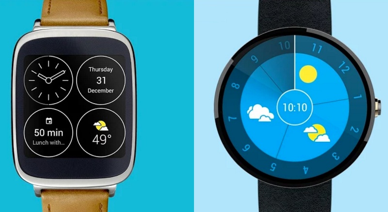

Чтобы получить информацию на смартфоне, нужно пройти через целый ритуал: достать девайс из кармана или сумки, разблокировать его, запустить приложение… К слову, последние версии iOS отчасти избавляют от этой рутины, ведь здесь можно смотреть виджеты, не разблокируя устройство. И все же смарт-часы удобнее в том плане, что они всегда под рукой — точнее, на ней. Благодаря так называемым усложнениям мы можем получить определенную информацию, просто лишь взглянув на экран часов.
Помните нашумевшую мобильную игру Monument Valley ? Так вот, ее разработчик, ustwo, создал много интересных циферблатов для часов на Android Wear. Все они есть в магазине приложений Google Play. Взять, к примеру, Bits Watch Face. На одном экране можно уместить до семи усложнений. Это значит, что, просто подняв свое запястье, вы будете видеть не только время и дату, но и погоду, количество пройденных шагов, акции, события в календаре и так далее. Разумеется, присутствует возможность кастомизации. Более изящный, но менее функциональный вариант — ustwo Smart Watch Faces.
Что касается Apple Watch, то для них также создано немало усложнений, однако берутся они исключительно из приложений — сами циферблаты скачивать нельзя. В качестве достойного примера выступает приложение iTranslate. Прямо на циферблате оно показывает самые распространенные фразы в той языковой зоне, где вы находитесь. Например, если вы прилетите в Берлин, часы начнут отображать распространенные фразы на немецком с переводом на ваш язык.
Многие современные носимые устройства можно использовать в качестве умного будильника, и смарт-часы здесь не исключение. Что же это за функция такая? Отдельное приложение или встроенная в часы опция с помощью акселерометра мониторит вашу активность во время сна, определяя по вашим движениям, в какой именно фазе сна вы пребываете. Умный будильник разбудит вас именно в той фазе, в которой вы вероятнее всего проснетесь бодрым — в фазе быстрого сна. Кстати, фазы медленного и быстрого сна сменяют друг друга по нескольку раз за ночь. Пример работы будильника: вы выставляете его, например, на 7 утра, а часы будят вас в 6.30, потому что именно в это время они фиксируют переход в фазу быстрого сна. Как результат, вы можете недоспать полчаса, зато проснуться более бодрым, нежели в 7 часов. Выражаясь словами Стива Джобса - it works like magic.
Кстати, об Apple. Если у вас Apple Watch, то с функцией умного будильника вам едва ли повезло: компания хочет, чтобы ночью ваши часы лежали на зарядке в так называемом «Ночном режиме» (появился в watchOS 2). И не стоит путать с умным будильником такие приложения, как Sleep++: они лишь регистрируют фазы сна, а вот будить не умеют. Проблема с отсутствием будильников, скорее всего, временна. Все дело в слабой батарее: вам просто некогда будет заряжать Apple Watch, если днем вы в них ходите, а ночью — спите. Как бы то ни было, на Android Wear умные будильники есть — можно поставить, например, Wake Up Well.